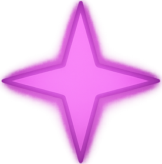

Maîtrise des chants
 Passif
Passif
Le Troubadour soutient principalement son groupe par le biais de chansons et de performances. De nombreuses aptitudes prennent la forme de chants, bien que ceux-ci puissent également se manifester sous d'autres formes auditives ou visuelles, selon les talents propres du Troubadour.
L’activation d’un chant requiert une action. Aux tours suivants, le Troubadour peut prolonger les effets du chant en dépensant une action spéciale à 1 PA. La durée du chant est alors étendue jusqu’à la fin de son prochain tour.
Un chant prend fin si le Troubadour termine son tour sans l’avoir prolongé, ou s’il devient inconscient ou incapable de se produire. Un seul chant peut être actif à la fois. Pour bénéficier des effets d’un autre chant, le Troubadour doit en commencer un nouveau en utilisant une action.
Au niveau 1, le Troubadour gagne la maîtrise de la compétence Représentation. Si un chant est maintenu pendant une période prolongée (comme lors d’un voyage ou d’une exploration de donjon), le Troubadour gagne un niveau d’épuisement pour chaque heure de performance continue.
Chant du Guerrier
 2 PA (Action)
2 PA (Action)
Jouant un hymne ardent, le Troubadour stimule ses alliés à l'action. Jusqu'à la fin du prochain tour du Troubadour ou jusqu'à ce que le Troubadour commence un nouveau chant, les alliés qui peuvent entendre ou voir le Troubadour (selon le type de performance) gagnent une Offense égale au modificateur de Charisme du Troubadour. Ce bonus ne peut pas dépasser la moitié du niveau du Troubadour, arrondi au supérieur (minimum 1).
Chant du Refuge
2 PA (Action)
Avec un staccato vif, le Troubadour maintient ses alliés sur leurs gardes et alertes au danger. Jusqu'à la fin du prochain tour du Troubadour ou jusqu'à ce que le Troubadour commence un nouveau chant, les alliés qui peuvent entendre ou voir le Troubadour (selon le type de performance) gagnent 1 de Défense.
Réverbération
1 PA (Réaction)
Lorsqu'un bonus doit être appliqué à un allié dans les 18 mètres, ou un malus doit être appliqué à un ennemi dans la même portée, le Troubadour peut utiliser sa réaction pour étendre ses effets à un nombre d'alliés/ennemis égal à son modificateur de Charisme dans les 18 mètres pour la même durée que l'effet original.
Tempo
 Spécialisation
Spécialisation
Choisissez un Tempo, une stratégie et une vitesse à laquelle le Troubadour opère. Le Troubadour gagnera des aptitudes supplémentaires de ce Tempo à mesure qu'il augmentera de niveau.
Ensemble
Passif
Le Troubadour peut maintenir une mélodie plus complexe. Ils peuvent combiner les effets de deux chants lorsqu'ils commencent à chanter, et maintenir les deux chants comme s'ils ne continuaient qu'un seul.
Chant du Pied Léger
2 PA (Action)
Un air léger soulève le poids des épaules des alliés, leur permettant de se déplacer rapidement. Jusqu'à la fin du prochain tour du Troubadour ou jusqu'à ce que le Troubadour commence un nouveau chant, les alliés bénéficient d'un bonus à toutes les vitesses de déplacement auxquelles ils ont actuellement accès. Ce bonus est égal à 1.5 mètres multiplié par le modificateur de Charisme du troubadour, avec un minimum de 1.5 mètres.
Prélude
 1 PA (Action Bonus)
1 PA (Action Bonus)
En ajoutant une touche de magie élémentaire pour enchaîner sur un chant, le Troubadour peut accorder à ses alliés un bonus supplémentaire. Choisissez le Prélude du feu, de la glace ou de la foudre, et un allié que vous pouvez voir. Si cet allié est affecté par un chant commencé ce tour ou celui que le Troubadour a choisi de prolonger, il peut infliger des dégâts de feu, de glace ou de foudre (selon le Prélude choisi) au lieu du type de dégâts de son arme jusqu'à la fin du prochain tour du Troubadour.
Harmonisation
2 PA (Action)
En jouant une pièce qui convient à l'instant, le Troubadour peut offrir son aide même de loin. Spécifiez un jet d'attaque ou un type de test de compétence et un allié qui peut vous voir ou vous entendre (selon le type de performance) ; faites un jet de Charisme (Représentation) de DD 15 ; en cas de succès, cette créature bénéficie d'un avantage sur sa prochaine tentative au test de compétence spécifié ou au jet d'attaque, jusqu'au début du prochain tour du Troubadour. Le Troubadour ne peut s'harmoniser qu'avec une seule créature à la fois.
 Heurt Retentissant
Passif
Heurt Retentissant
Passif
Les gestes théâtraux et les explosions tonitruantes ne font qu’ajouter à la prestation du Troubadour ! Lorsqu’il est en plein élan, même les effets négatifs semblent nourrir sa fougue. Si le Troubadour est en train de chanter un chant et qu’il doit effectuer un jet de sauvegarde contre une créature hostile ou un danger, il peut ajouter son bonus de maîtrise au jet si le type de chant qu’il interprète correspond à la caractéristique du jet de sauvegarde.
Correspondances entre chants et caractéristiques :
Chant du Guerrier – Force, Sagesse Chant du Pied Léger – Dextérité, Intelligence Chant du Refuge – Constitution, Charisme Chant de l'Intuition – Intelligence, Sagesse Chant de l'Éradication – Force, Dextérité Chant de Skanda – Charisme, Constitution Chant Barbare – Force, Constitution
Requiem de Santé
2 PA (Action)
Pendant 3 rounds, les alliés qui peuvent entendre ou voir le troubadour (selon le type de performance) gagnent un bonus de +4 sur les jets pour récupérer des conditions de statut. Si le Troubadour souffre actuellement de confusion, il peut faire un jet de Charisme (Représentation) de DD 15 au début de son tour ; en cas de réussite, il peut utiliser le Requiem de Santé au lieu d'attaquer selon les règles normales de la confusion.
Final
 3 PA (Action Complexe)
3 PA (Action Complexe)
Mettez immédiatement fin à tous les effets de chants. Jusqu'à la fin de leur prochain tour, les alliés qui perdraient les effets des chants gagnent des points de vie temporaires égaux à la moitié du niveau du Troubadour (arrondi à l’inférieur) + leur modificateur de Charisme. Le Troubadour ne peut pas commencer un autre chant jusqu'à la fin du prochain tour. Final ne peut être utilisé qu'une fois par long repos.
Ensemble de la Vie
1 PA (Action Bonus)
Jusqu'à la fin du prochain tour du Troubadour, la première fois qu'un allié sous les effets d'un chant subit des dégâts d'un ennemi, il peut récupérer 3d8 + modificateur de Charisme du Troubadour points de vie. Si les dégâts devaient les faire tomber à 0 points de vie, ils subissent toujours un niveau d’épuisement, mais ne perdent pas leurs bonus et malus. Le Troubadour ne peut pas activer de nouveau l'Ensemble de la Vie avant de commencer un nouveau chant en utilisant une action.
Don sacré
Passif
Les prodigieuses capacités d'un Troubadour brillent comme un phare pour que tous puissent s'abriter et se réconforter, emportant leurs soucis comme un ruisseau d'été. Lorsqu'il s'accorde un court repos, le Troubadour peut faire un jet de Charisme (Représentation); sur un résultat de 15 ou plus, tous les alliés peuvent restaurer une utilisation d'une aptitude limitée, un emplacement de sort de n'importe quel niveau, un dé d'inspiration, ou jusqu'à 5 points de Qi. Ils peuvent également lancer un dé de vie supplémentaire pour récupérer des points de vie sans le dépenser, quel que soit le résultat du Troubadour sur le jet de Représentation.
Fantasia
3 PA (Action Complexe)
Choisissez Fantasia de la Flamme, du Givre ou de la Foudre. Pendant 3 rounds, les Préludes de ce type affectent tous les alliés influencés par un chant. Pendant ce temps, les alliés sous l'effet d'un Prélude peuvent annuler ses effets pour réduire un instance de dégâts du même type que le Prélude par le modificateur de Charisme du Troubadour (minimum 1).
Chant de l’Intuition
2 PA (Action)
Une mélodie claire et tranquille accorde de la clarté aux alliés. Les alliés qui peuvent entendre ou voir le Troubadour (selon le type de performance) gagnent un bonus pour toucher égal à la moitié de leur modificateur de Charisme, arrondi au supérieur (minimum 1) jusqu'à la fin du prochain tour du Troubadour.
Croisade
3 PA (Action Complexe)
Jusqu'à la fin du round en cours, tous les alliés qui peuvent entendre ou voir le Troubadour (selon le type de performance) infligent 50% de dégâts supplémentaires. La Croisade ne peut être utilisée qu'une fois par long repos. Le Troubadour reçoit 1 niveau d'épuisement après une Croisade réussie, à la fin du tour.
 Détails de la classe
Détails de la classe
 Points de vie : 1d8 + modificateur de Constitution par niveau de Troubadour
Points de vie : 1d8 + modificateur de Constitution par niveau de Troubadour Dés de vie : 1d8 par niveau de Troubadour
Dés de vie : 1d8 par niveau de Troubadour DD des jets de sauvegarde : 8 + bonus de maîtrise + modificateur de Charisme
DD des jets de sauvegarde : 8 + bonus de maîtrise + modificateur de Charisme Maîtrises : Arcs, Armes à feu, Épées, Haches, Couteaux de lancer ; Armures légères ; Tout instrument ou ensemble d'outils pouvant être utilisé pour performer
Maîtrises : Arcs, Armes à feu, Épées, Haches, Couteaux de lancer ; Armures légères ; Tout instrument ou ensemble d'outils pouvant être utilisé pour performer Jets de sauvegarde : Dextérité, Charisme
Jets de sauvegarde : Dextérité, Charisme Compétences : Choisissez 3 parmi Acrobaties, Escamotage, Discrétion, Arcanes, Nature, Intuition, Perception, Tromperie, Intimidation et Persuasion
Compétences : Choisissez 3 parmi Acrobaties, Escamotage, Discrétion, Arcanes, Nature, Intuition, Perception, Tromperie, Intimidation et Persuasion Équipement de départ : Une arme maîtrisée (ou deux si légères), une armure légère, a) 10 couteaux de lancer ou b) 10 hachettes, un ensemble d'outils ou un instrument dont ils ont la maîtrise, un sac d'explorateur
Équipement de départ : Une arme maîtrisée (ou deux si légères), une armure légère, a) 10 couteaux de lancer ou b) 10 hachettes, un ensemble d'outils ou un instrument dont ils ont la maîtrise, un sac d'explorateur 1 PA (Action Combo)
1 PA (Action Combo)